Universidad Nacional de Ingeniería
Facultad de Ciencias
Escuela Profesional de Ciencias de la Computación
Administración de Redes
Proyecto Capstone: Internetworking
Cada departamento está en un subred diferente. Para una mayor escalabilidad se optó por usar vlan para cada subred. Para ello se usó un switch de capa 3 (por cada área) encargado de asignar los vlan y del enrutamiento inter-vlan.
Como ejemplo se va ha mostrar las configuraciones realizadas en el área de atenciones empresariales de la sede atención al cliente.
Vlan por área
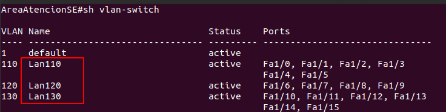Interfaces Vlan
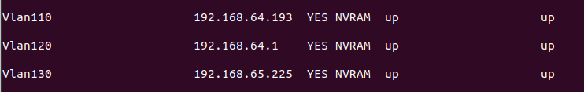Enrutamiento entre vlan
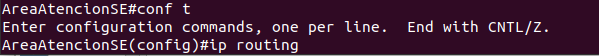Conexión entre vlan 110 y 130
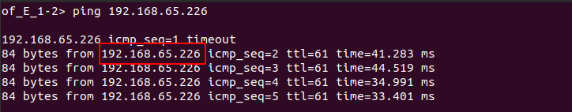Luego se configura el fichero dhcp.conf. con los dominios y las zonas para el DNS así cada vez que un cliente solicite una ip , el servidor tambien enviará el dominio del DNS que se le asigno.
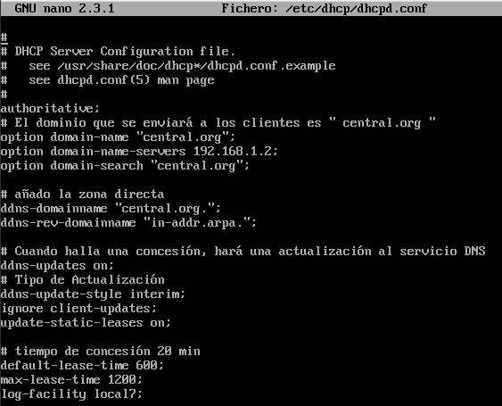 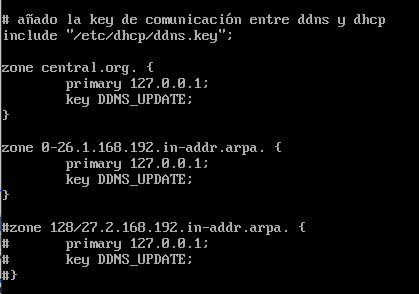 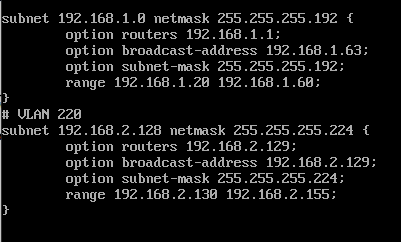Para el DDNS se instaló el paquete Bind9 , Para la comunicación entre DHCP y DDNS se generó una llave.
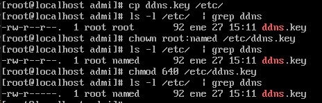Luego configuramos el archivo named.conf
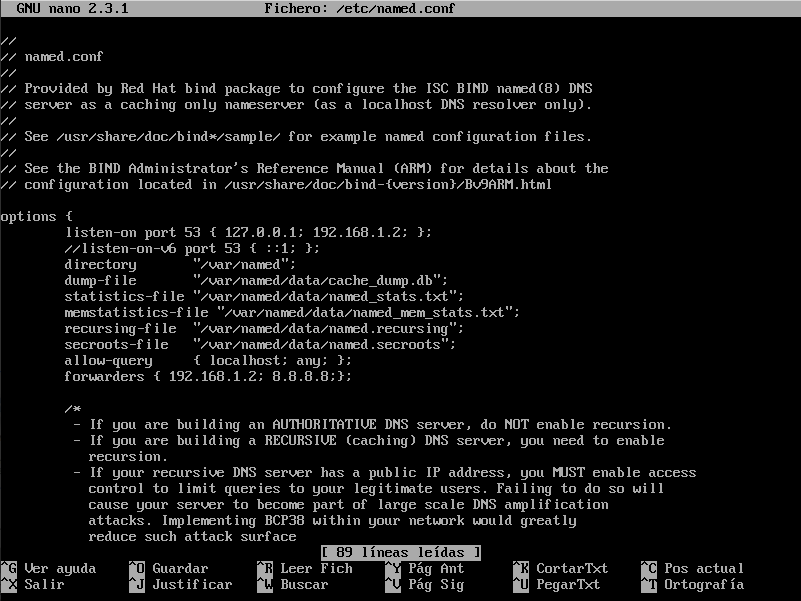 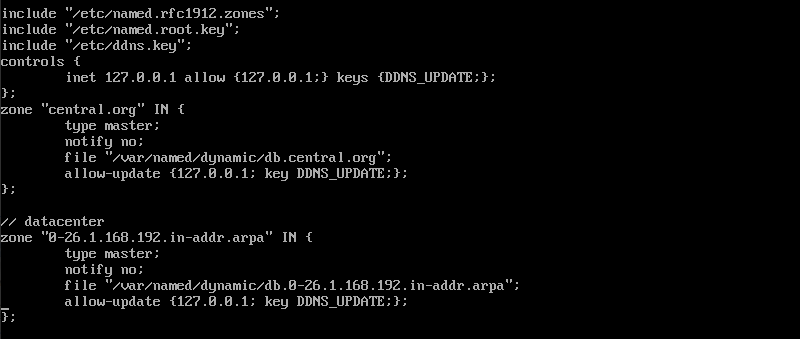 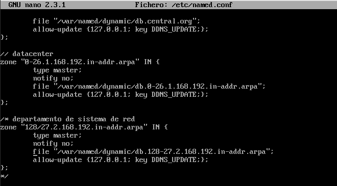creamos una base de datos para la zona directa
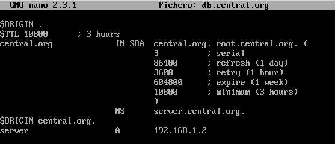creamos una base de datos para la zona derecha
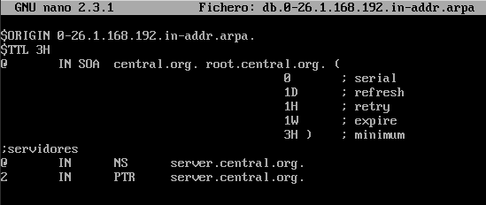